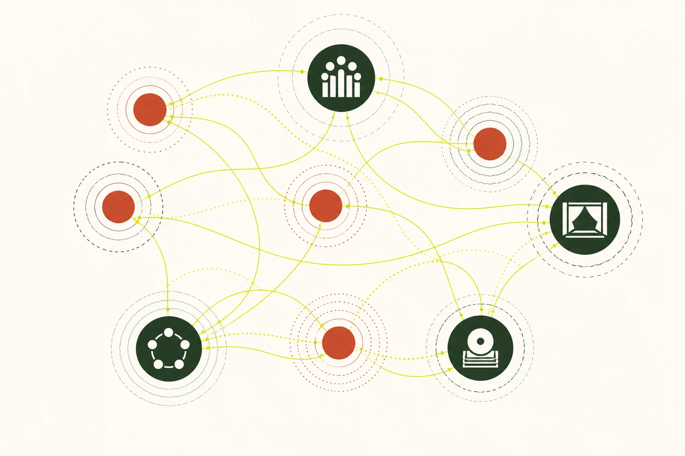

部分核實版權限制
研究領域
地域與流派
從下列子題閱讀相關文章，或查找本領域已收錄的 26 筆來源。各子題的資料深度不同，頁內另列收錄狀況。
L2 · 已核實摘要27 個去重來源14 項核對紀錄
14 項已記錄核對的陳述 · 1100 字正文
本頁達到站內正文門檻，並附核對來源。層級反映資料覆蓋，不等於外部專家認證；引用前請核對原文。 來源數依站內規則去重，尚未逐一追查相互引用的依賴關係。
已核實專題
1 篇
相關來源
26 筆
部分核實版權限制
部分核實版權限制
部分核實版權限制
研究論文 · 2024
Transmission, cultural significance, and social dynamics of the Ti-Tzu Ten-Hole bamboo flute in Sichuan Province, China
Qiang Wang、Chalermsak Pikulsri、Pornpan Kaenampornpan
歷史與文化地域與流派教學與學習
已核實開放取用
部分核實版權限制
學位論文 · 2014-06-23
The dizi (Chinese bamboo flute) its representative repertoires in the years from 1949 to 1985
Chang-ning Chai
歷史與文化地域與流派曲目、作曲及演奏實踐指法與演奏技法
已核實開放取用
學位論文 · 1991
Music and musicians of the traditional Chinese 'dizi' in the People's Republic of China
Frederick Cheungkong Lau
歷史與文化人物與機構地域與流派曲目、作曲及演奏實踐教學與學習
部分核實只提供書目資料
部分核實版權限制
部分核實版權限制
部分核實版權限制
部分核實版權限制
部分核實版權限制
部分核實版權限制
部分核實版權限制
部分核實版權限制
部分核實版權限制
部分核實版權限制
未核實版權限制
部分核實版權限制
部分核實版權限制
未核實版權限制
部分核實版權限制
部分核實版權限制
部分核實版權限制
部分核實版權限制
本篇視覺示意（非教學圖）
